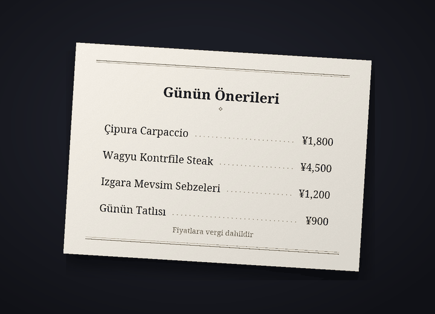

Discord sohbet çeviri botu
Discord'da herkes kendi dilinde sohbet etsin
Cozirom, sohbeti karşı tarafın diline çeviren bir Discord botudur. Açtığında mesajların kendi adın ve profil fotoğrafınla çevrilmiş olarak paylaşılır, görsellerdeki yazılar da çevrilir.
Çevirileri AI (Anthropic'in Claude modeli) yapar. Hata yapabilir, bu yüzden önemli konularda orijinali de kontrol et.
Neler yapabilir
Yazıyı, görseli ve sesi tek bir bot çevirir
Plan limitleri çeviri sayısıyla ölçülür. Bir mesajın bir dile çevrilmesi 1 çeviridir.
6 özellik
Çeviri sayısı
Otomatik çeviri
/çeviri açkomutunu bir kez çalıştırman yeterli: o sunucudaki mesajların karşı tarafın dilinde, kendi adın ve profil fotoğrafınla paylaşılır. Orijinal, çevirinin altında küçük yazıyla kalır; orijinalin tamamını düğmesiyle görebilirsin.
düğmesiyle görebilirsin.ÇeviriMesaj başına 1
Görsellerdeki yazılar
Menüler, oyun ekranları, mimler: görselde yazı varsa okunur ve çevrilir. Çeviriyi açmış kişilerin görsellerinin altındaki
 simgesinden ya da sağ tık çevirisiyle açarsın. Sonucu yalnızca isteyen kişi görür ve yazı olmayan görseller sayılmaz.
simgesinden ya da sağ tık çevirisiyle açarsın. Sonucu yalnızca isteyen kişi görür ve yazı olmayan görseller sayılmaz.ÇeviriGörsel başına yaklaşık 9
Görsel üzerine çeviri
Görselin, orijinal yazısı silinip yerine çevirisi yazılmış bir kopyasını
 simgesinden alırsın. Yazı tipi, orijinal harflere yakın olan “Orijinale uygun” ile başlar; “Tırnaklı”, “El yazısı” ve “Çizgi roman” gibi en fazla 10 yazı tipi seti arasında geçiş yapabilirsin ve bu sayılmaz. En iyi ekran görüntüleri, mimler, oyun ekranları ve menüler gibi yatay yazılarda çalışır; sonucu yalnızca basan kişi görür.
simgesinden alırsın. Yazı tipi, orijinal harflere yakın olan “Orijinale uygun” ile başlar; “Tırnaklı”, “El yazısı” ve “Çizgi roman” gibi en fazla 10 yazı tipi seti arasında geçiş yapabilirsin ve bu sayılmaz. En iyi ekran görüntüleri, mimler, oyun ekranları ve menüler gibi yatay yazılarda çalışır; sonucu yalnızca basan kişi görür.ÇeviriGörsel başına yaklaşık 19


Örnek: orijinal fotoğraf (Japonca bir menü kartı) ve aynı fotoğrafın, yazısı silinip yerine “Tırnaklı” yazı tipiyle Türkçe çevirisi yazılmış hâli. Sesli mesajlar
Telefon uygulamasından gönderilen bir sesli mesaja sağ tıklayınca söylenenleri ve çevirisini görürsün. 3 dakikaya kadar olan mesajlar yazıya dökülür, konuşma içermeyen mesajlar sayılmaz.
ÇeviriSaniye başına 1, artı çeviri10 saniyelik mesaj genelde 11
Dört üslup
Argo, samimi, nazik veya resmi; her sunucu için ayrı seçilir. Arkadaşlarla samimi, yeni bir yerde resmi. Guest (ücretsiz) planında ilk 14 gün dördünü de kullanırsın, sonrasında nazik üslup kalır.
ÇeviriÜcretli: dördü de. Free: ilk 14 gün
31 dil
31 dile çeviri yapılır. Botun ekranları ve komut adları 30 Discord dilinde görünür; böylece karşı taraf da botu kendi dilinde kurar.
Çeviri31 çeviri dili, 30 görüntüleme dili

Nasıl başlanır
Üç adımda çeviri senin adınla görünür
Botu sunucuya ekle
Bir sunucu yöneticisi botu sunucuya ekler. Davet bağlantısını destek sunucusu üzerinden iste.
Çeviriyi aç
Çevrilmek isteyen herkes o sunucuda
/çeviri açkomutunu çalıştırır. Bot senin ve karşı tarafın dilini tahmin edip ayarlar panelini açar. Yanlışsa açılır menülerden değiştir.Her zamanki gibi yaz
Her zamanki gibi yaz, çeviri senin adınla görünür. Guest (ücretsiz) planıyla başla, daha fazlasına ihtiyacın olduğunda planını planlar sayfasından değiştir.
Gizlilik
Çevrilecek mesajlar ve görseller yalnızca Anthropic şirketine (ABD), sesli mesajların sesi ise yalnızca Google şirketine (ABD) gönderilir. Bot, paylaşılan bir çevirinin orijinalini 14 gün, önbellekteki çevirileri 30 gün saklar; görselleri, sesi ve bunlardan okunan metni saklamaz. Sohbet içeriği asla günlüklere yazılmaz ve /çeviri verilerimi-sil komutuyla verilerini istediğin zaman silebilirsin.